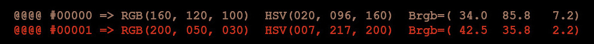
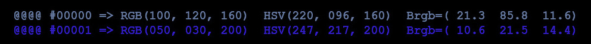
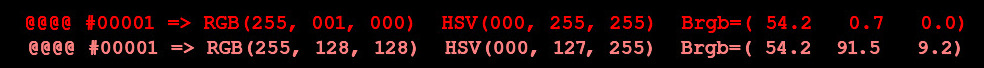
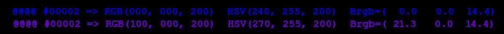
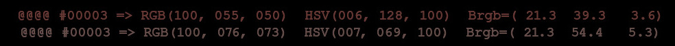
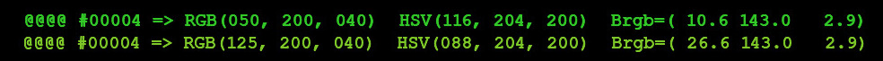

Anaglyph HALD Generator algorithm and how to control it
By Oleg Kosyakovsky
Table of Contents
The idea and the glossary
As stated, Anaglyph Hald Generator produces *color lookup tables that substitute colors which are prone to retinal rivalry when viewed through red-cyan glasses with the colors that aren't, while the latter are chosen to look related to the original colors they replace.
Notes on glossary:
- the author uses interchangeably the terms "folder" and "directory"; the former is misleading but widely known , the latter is technically correct but for some reason "obstructed" from the common users
- the author uses interchangeably the terms "Tcl shell" and "Tcl interpreter"
- the author uses interchangeably the terms "command-shell* and "shell*; these refer to CMD or BASH
- "LUT" means lookup table, "CLUT" means color lookup table; the author uses these two terms and terms "HALD", "HALD-LUT", "HALD-CLUT" interchangeably
- "Identity-HALD" standardly means a HALD-CLUT that maps each color to itself
- the author refers to a HALD-CLUT made by Anaglyph HALD Generator as "balanced HALD"
- the author uses interchangeably the terms "configuration file", "config file", and "config"
- the author uses interchangeably the terms "anaglyph" and "red-cyan anaglyph"
- "balancing" a color means replacing it with some related anaglyph-friendly color obtained by reducing the difference between red channel on one side, and green and blue channels on the other side
- sides-ratio is a ratio between values of red channel, and maximum of green and blue channels - the larger divided by the smaller; used as a measure of disbalance in colors
In the Anahald terminology, a color is balanced if it does not cause retinal rivalry, otherwise the color is unbalanced.
Example of balanced (160,120,100) and unbalanced (200,50,30) colors:

Figure 1: Example of balanced (top) and unbalanced (bottom) red-dominated colors
Example of balanced (100,120,160) and unbalanced (50,30,200) colors:

Figure 2: Example of balanced (top) and unbalanced (bottom) cyan-dominated colors
Anahald measures the amount of disbalance by means of sides-ratio represented by
- red-cyan-ratio for mostly red colors - ("red-dominated")
- cyan-red-ratio for mostly green or blue colors - ("cyan-dominated")
The former (conceptually) equals RedValue / max(GreenValue, BlueValue), the latter - vice versa. E.g. sides-ratio used in computations is larger than 1, except for neutral colors having sides-ratio of 1.0.
In the example above
- RedCyanRatio(160,120,100) ~ 1.33
- RedCyanRatio(200,50,30) = 4.00
Color where red strongly dominates is characterized as red-heavy, color where blue and/or green strongly dominates is characterized as cyan-heavy.
For Anahald, a color has major (dominating - larger channel value) and minor (the other) sides, where side means red or cyan. On the cyan side, green and blue channels are max or min depending on their values:
- for (10,20,30), red is minor, green is min-major, blue is max-major
- for (30,20,10), red is major, green is max-minor, blue is min-minor
- for (30,20,20), red is major, max-minor == min-minor
Anahald looks at mostly-red and mostly-cyan colors separately - as two "half-palitres", where each one is ordered by correspondent sides-ratio that's greater than one
- red-dominated colors are ordered by red-to-cyan ratio
- cyan-dominated (mostly green or blue) colors are ordered by cyan-to-red ratio
- neutral colors are considered included into both half-palitres
- each half-palitre is split into three regions - neutral, non-neutral-balanced, non-neutral-unbalanced
[1.0 --> NEUTRAL -->][--> BALANCED --> Min-Balanced] [--> UNBALANCED --> 255/0.5]
The goal of Anahald algorithm is to:
- map red-heavy colors to red-dominated balanced colors while maintaining their relative ordering
- map cyan-heavy colors to cyan-dominated balanced colors while maintaining their relative ordering
- ensure smooth transition between modified and unmodified colors; done by altering some of the originally balanced colors too
- the closer is a color to neutrality, the smaller the magnitude of change
- the closer is a color to neutrality, the smaller the magnitude of change
- prevent any significant change in neutral colors to avoid shifting the whites
Boundaries between the above-shown regions on sides-ratio axis, as well as options to fine-tune color-mapping formulae are specified by Anahald control parameters. These parameters are supplied to Anahald invocation in Anahald config files; one config file fully defines the LUT to be generated. This page provides enough explanations whenever needed, and a summary is located in Anahald Configuration Files and Control Parameters.
The simplified view of color-modification process
Anahald color modification is applied to lookup table, not to the actual stereopairs.
E.g. conceptually the algorithm takes as input an identity-lookup-table (the one mapping colors to themselves) and outputs a modified lookup-table to be applied to the stereopairs.
The core idea
Looking straight at RGB channel values, do the following for each color in identity LUT:
- classify the color into balanced or unbalanced
- if unbalanced, increment the minor side to make the RGB trio balanced; if originally balanced, leave unchanged
Disclaimer: the formulas in this section aim to present the pure concept of color balancing; the actual code became significantly more complicated - as usual - as the result of handling corner cases and control parameters.
Of course, the color mapping applied must reflect the difference in channel-to-channel ratios between original colors; it is scaled, but shouldn't be inverted.
Color scale from sides-ratio perspective
Colors are analyzed and modified in terms of their red-to-cyan or cyan-to red ratio - larger value divided by smaller value.
The key control parameter is MaxBalancedMajorToMaxMinorRatio - the value of sides-ratio that separates balanced and unbalanced ranges. The author assumed the typical value is around 2.0 and up to 3.0, but a formal research would be better.
The change must result in max-minor channel coming in balance with the major side (max-major channel). The value of min-minor channel could be adjusted too; the way of doing it depends on MinMinorScaleOption control parameter.
The drawing below illustrates change to modified color's sides-ratio with the old and new values placed on the red-to-cyan- and cyan-to-red- axis
- The treatments for red-dominated and cyan-dominated colors are symmetrical, while the former deals with red-to-green or red-to-blue ratio, and the later - with green-to-red or blue-to-red ratio
- "Min-Balanced" thresholds for both red domination and cyan domination are derived from MaxBalancedMajorToMaxMinorRatio. As of this writing the thresholds are equal
- The numeric constants assume 8-bit color - the only option supported (at the time of this writing)
>-{0.5/255}-----(red-cyan-ratio)-----{1.0}-------------------------{255/0.5}->
<-{255/0.5}-----(cyan-red-ratio)-----{1.0}-------------------------{0.5/255}-<
!
[...<- Cyan-Heavy] [Min-Balanced ...[Neu!tral]... Min-Balanced] [Red-Heavy ->...]
\/ \/ \/ ! \/
| +-----------+ | ! +----------------+
+----------------\/ \/ \/ ! \/
[...<- Cyan-Heavy] [Min-Balanced ...[Neu!tral]... Min-Balanced] [Red-Heavy ->...]
| | ! | |
| |<---- only-balanced-colors-range (new)--->| |
|<--------------------------------- all-colors-range (old)--------------------->|
The idea behind the main color-balancing action formulae
The main action of Anahald color balancing brings max-minor channel into the balance with max-major channel.
- e.g. if an unbalanced color is green-dominated, red channel must be increased
The conceptual formulae for max-minor channel is presented below
colorRangeWidthNew = 1 - 1/{MaxBalancedMajorToMaxMinorRatio}
colorRangeWidthOld = MaxChannelValue - MinChannelValue == 255 - 0 = 255
MinAllowedMaxMinor = OldMaxMajor / {MaxBalancedMajorToMaxMinorRatio}
NewMaxMinor = MinAllowedMaxMinor + OldMaxMinor * (colorRangeWidthNew / colorRangeWidthOld)
- control parameters appear in {} - curly braces
- on the concept level red-dominated and cyan-dominated colors are treated symmetrically
- as the result the original range of RGB color trio-s gets "squeezed" into its subset - the one of the balanced colors.
Adjustment of min-minor channel
The main color-balancing action - scaling of max-minor channel - brings the color into balance from Anahald point of view. But leaving min-minor channel untouched may produce an unrelated color.
Two approaches provided for balancing min-minor channel, selectable by MinMinorScaleOption control parameter.
If MinMinorScaleOption = 1, min-minor channel undergoes the same treatment as the max-minor, independently of it; in the formulae below lines that completely duplicate prior calculation of max-minor are commented-out with #:
NewMinMinor = MinAllowedMaxMinor + OldMinMinor * (colorRangeWidthNew / colorRangeWidthOld)
If MinMinorScaleOption = 2, min-minor channel is scaled-up by the same factor as max-minor:
NewMinMinor = OldMinMinor * (NewMaxMinor / OldMaxMinor)
Colors on the boundary between balanced and unbalanced
If the boundary between balanced and unbalanced is a hard threshold, color gradients crossing this boundary are disrupted with apparent "stair" at appropriate points. Anahald addresses this problem by smoothing the transition - modifying originally balanced colors with sides-ratios (red-to-cyan or cyan-to-red) close to the threshold value:
- such colors are referred to as "marginally balanced"
- the more balanced is such a color, the smaller change it undergoes
- control parameter MinBndBalancedMajorToMaxMinorRatio specifies the minimum value of color's sides-ratio for the color to be considered marginally balanced; colors with smaller sides-ratios aren't altered at all
- control parameter SmoothBndBalancedOption allows to choose one of two approaches for the smoothing action; more on this follows
- all the three color channels are affected
Two approaches to smoothing balanced-unbalanced boundary
Whatever the approach, the smoothing formulae just takes weighted average between the original and would-be-modified values for each of the three color channels.
channelValueNew = (1 - w) * channelValueOld + w * channelValueIfScaled
- channelValueOld is the original color-channel value
- channelValIfScaled would be the modified color-channel value as if this (RGB) color was treated as originally unbalanced
- channelValueNew is the ultimate color-channel value
- w is the weight coefficient; the way of calculating its value depends on control parameter SmoothBndBalancedOption
- the goal is to gradually diminish the change in color-channel value (result of balancing) - from its maximum at the balanced-unbalanced boundary, so that this change disappears at colors with sides-ratio equal to MinBndBalancedMajorToMaxMinorRatio
The two user-selectable formulas for calculating smoothing weight coefficient (assumuing red-dominated color):
"linear weight" - used if SmoothBndBalancedOption = 1
wLinear = 1.0*(red_cyan_ratio - {MinBndBalancedMajorToMaxMinorRatio}) / ({MaxBalancedMajorToMaxMinorRatio} - {MinBndBalancedMajorToMaxMinorRatio})}]"parabolic weight" - used if SmoothBndBalancedOption = 2
a == -1 / ({MinBndBalancedMajorToMaxMinorRatio} - {MaxBalancedMajorToMaxMinorRatio})^2 wParabolic = a*(red_cyan_ratio - {MaxBalancedMajorToMaxMinorRatio})^2 + 1,
Compared to linear-weight, for the parabolic option the weight reduces slower for near-balanced color, and steeper for more unbalanced colors.
Alternative to smoothing balanced-unbalanced boundary
There anyway exists a possibility to keep the boundary as the hard limit (e.g. colors with smaller sides-ratio are unchanged, only colors with larger sides-ratio undergo balancing). But then one has to maintain a collection of LUT-s with different threshold values and choose the LUT on per-image basis. This is perfectly suitable for individual images or finite sequences of images; becomes more complicated for videos. In any case, an automatic tool to select an optimal LUT for an image out of multiple choices would be beneficial and should be a subject for future work - see Anahald_Future_Work.html.
Color computation steps in order
In reality computation of each color includes more stages than described in The simplified view of color-modification process. The author decided to save on detailed description of steps whose related control parameters are simple enough to understand.
Here is the list of steps involved in balancing one color:
- Pre-squeeze the major side or pre-inflate the minor side
- pre-squeeze makes the major side pay its part in balancing, which otherwise would keep it unchanged and only increase the minor side - see (The idea behind the main color-balancing action formulae). The major side is scaled down to constitute approximately PreSqueezeMajorToFract (control parameter, <= 1) of the initial difference between major and minor sides.
- pre-inflate is symmetrical to pre-squeeze computation-wise; specified by control parameter PreInflateMinorToFract being < 1; results in minor side ending-up bigger than it would be otherwise
- Only one of pre-squeeze or pre-inflate allowed to be active (e.g. have its control parameter < 1)
- This stage includes a hidden action of thresholding - clipping very low channel values to a hardcoded threshold; currently restricted to replacing 0 by 1
- pre-squeeze makes the major side pay its part in balancing, which otherwise would keep it unchanged and only increase the minor side - see (The idea behind the main color-balancing action formulae). The major side is scaled down to constitute approximately PreSqueezeMajorToFract (control parameter, <= 1) of the initial difference between major and minor sides.
- Application of green-blue bias to the minor side of red-dominated colors.
- green channel ls multiplied by- and blue channel is divided by GreenToBlueBiasMultWhenMinor control parameter
- e.g. GreenToBlueBiasMultWhenMinor < 1.0 results in blue tint on the minor side, while GreenToBlueBiasMultWhenMinor > 1.0 results in green tint there
- green channel ls multiplied by- and blue channel is divided by GreenToBlueBiasMultWhenMinor control parameter
- Scale up the max-minor channel
- Increment the min-minor channel to prevent gap with new value of the max-minor
- Take weighted averages between the scaled- and original values for all the channels to smoothen transition between originally-balanced and originally-unbalanced colors
Examples of color modifications
Sample color modification flows shown in this section assume config file "rma_ba12_sq0d80gb0d97sc1d5_cp.ini" which is supplied with Anahald.
Recall that the numbers don't exactly match the conceptual ratios, bur are close enough.
Parameter values are shown tn the table below:
| -ID- | Green | MinBn | MaxRg | Smoot | PreSq | MinMi | PreIn | MaxBa |
|---|---|---|---|---|---|---|---|---|
| ToBlu | dBala | bVal | hBndB | ueeze | norSc | flate | lance | |
| eBias | ncedM | alanc | Major | aleOp | Minor | dMajo | ||
| MultW | ajorT | edOpt | ToFra | tion | ToFra | rToMa | ||
| henMi | oMaxM | ion | ct | ct | xMino | |||
| nor | inorR | rRati | ||||||
| atio | o | |||||||
| ahg_oleg_cp | 0.97 | 1.5 | 255 | 2 | 0.80 | 2 | 1.0 | 3.0 |
| Comment | Original-RGB | PreSqueeze/PreInflate | Bias | Balance | Weghting |
|---|---|---|---|---|---|
| Saturated red | 255 0 0 | 204 0 0 | 204 0 0 | 204 68 0 | 204 68 0 |
| Saturated red | 255 1 0 | 204 1 0 | 204 1 0 | 204 69 0 | 204 69 0 |
| Saturated blue | 0 0 200 | 0 0 160 | 0 0 160 | 53 0 160 | 53 0 160 |
| Marginal reddish | 100 55 50 | 91 55 50 | 91 53 52 | 91 66 58 | 91 59 58 |
| Green-heavy | 50 200 40 | 50 170 40 | 50 170 40 | 90 170 34 | 90 170 34 |
Visualization of color-computation examples

Figure 3: Balancing saturated-red color {255 1 0}

Figure 4: Balancing saturated-blue color {0 0 200}

Figure 5: Balancing marginally balanced reddish color {100 55 50}

Figure 6: Balancing green-heavy color {50 200 40}